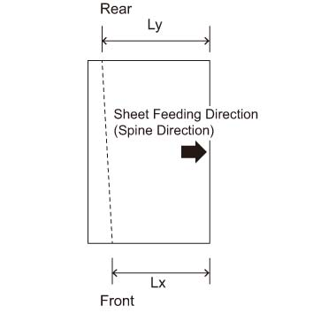
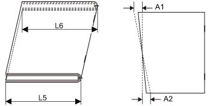
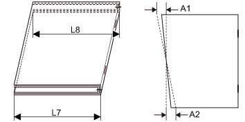
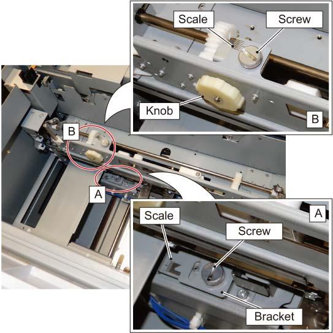
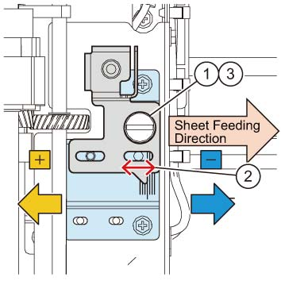
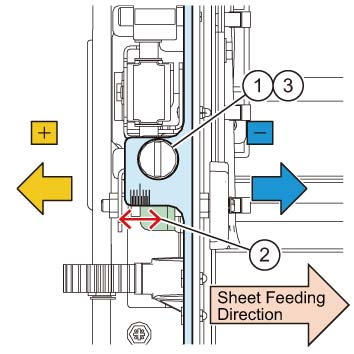
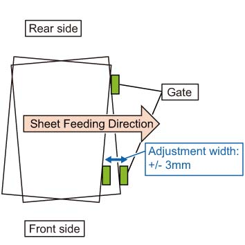
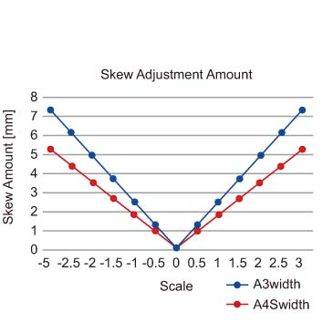

ADJ 45.33b.1 裁切器 歪斜 调整 步骤 
参考 PL:PL 45.33b
目的
调整 裁切器 门 位置 to 正确的 纸张 歪斜 数量.

注意不要 touch the cutter 章节 as the blade of 裁切器 Cutter poses a 危险.

Keep 装订器 堆叠器 纸盘 raised as it interferes 使用 opening 和 closing 的 顶部 左侧 盖板 当...时 it is lowered.
当...时 turning 关闭/脱离 电源开关 的 主机, 确保 the [数据] 灯 不是 flashing.
按下 [Job 状态] to 确认 那里 是 编号 jobs in progress/waiting in the queue. 关闭电源 开关, 然后 确保 the screen 显示 关闭 和 该 [电源 Saver] is 编号 longer flashing.
关闭 the 主 电源 开关, 确认 the [主 电源] 灯 具有 turned 关闭/脱离, 和 然后 unplug 电源插头.
调整 裁切器 门 位置 to 正确的 纸张 歪斜 数量.
调整
关闭电源 开关, 和 unplug 电源插头 从 the 出口 在...之后 机器 具有 已完成 其 关机 process internally.
分离方背折叠裁切器. (REP 45.1.1)
拆卸 前面 上方 盖板. (REP 45.2.1)
拆卸后盖板. (REP 45.4.1)
拆卸 出纸 盖板. (REP 45.4.2)
Dock the 方背折叠裁切器 该 已 detached in 步骤 2.
Reconnect 连接器 (x1) 该 已 断开的 in 步骤 2.
执行 the 步骤 8 to 11 to 检查 方背折叠裁切器 纸张 feeding, cheat the Jig (2) 和 互锁 (3). (ADJ 45.1.1)
插头 in 电源线 和 打开电源 机器的.
设置 [折叠], or [折叠 & 装订针] + [裁切] + [Book Pressing] + [纸张尺寸] jobs 使用 UI Menu 和 按下 启动 button 使用 顶部 左侧 盖板 和 顶部 右侧 盖板 打开. 检查 方背折叠裁切器 纸张 feeding 操作.
打印 出 3 samples 的 Job* 该 requires 歪斜 调整.
*: 任何 Job 该 is determined to require 歪斜 调整
测量 数量 of cut 歪斜. (图 1)
测量 Lx 和 Ly 图中 以下.
测量 cut 歪斜 amounts, 和 calculate the 平均值 值 用于 the 3 parts.
歪斜 数量 (mm) = | Lx (mm) - Ly (mm) |

(图 1) 输出 纸张 原理图 (tm445507)
To ensure accuracy 的 小册子 裁切 歪斜 数量, 检查 规格 on 小册子 裁切 歪斜 数量 以下. (图 2) (图 3)
[小册子 裁切 歪斜 数量]
小册子 + 裁切 (图 2)
检查 移位 (mm) 之间 the 前面 和 后面 of 小册子, L5 和 L6。
用于 the 测量 位置, 测量 前面/后面 positions in 底部 纸张 (外部) in 输出 state.
当...时 Stapled: |L5 - L6| <= 1mm (at 95% 设置)
Furthermore, the difference 之间 the larger values of A1 or A2 in the 相同 Job 应 A <= 1mm (at 95% 设置).
当...时 Bi-折叠 (中央 折叠 用于 1 纸张 of 纸张)/Unstapled: |L5-L6| < = 1.5 mm (at 95% 设置)
Furthermore, the difference 之间 the larger values of A1 or A2 in the 相同 Job 应 A <= 1.5mm (157gsm或 更少) or A <= 1mm (多于 157gsm) (at 95% 设置).

(图 2) tm445508
小册子 + 裁切 + 方背 (图 3)
检查 移位 (mm) 之间 the 前面 和 后面 of 小册子, L7 和 L8。
用于 the 测量 位置, 测量 前面/后面 positions in 底部 纸张 (外部) in 输出 state.
当...时 Stapled: |L7 - L8| < = 1.5 mm (at 95% 设置)
Furthermore, the difference 之间 the larger values of A1 or A2 in the 相同 Job 应 A <= 1mm (at 95% 设置).
不 guaranteed 当...时 单面/单个 折叠 (中央 折叠 用于 1 纸张 of 纸张)/Unstapled

(图 3) tm445509
调整 scale 的 歪斜 调整 零件/部分.
The 歪斜 调整 零件/部分 第一个 调整 零件/部分 A 在底部, 和 然后 调整 零件/部分 B 在顶部 by an 数量 corresponding to 该 值. (图 4)

(图 4) tm445510
调整 歪斜 of 零件/部分 A (下方 侧面). (图 5)
松开螺钉. (PL 45.29)
调整 位置 的 scale 到 + 侧面 or - 侧面 of 支架 按照 the 数量 of 歪斜.
松开螺钉.

(图 5) 零件/部分 A 歪斜 调整 (下方 侧面) (tm445511)
调整 歪斜 of 零件/部分 B (上方 侧面). (图 6)
松开螺钉. (PL 45.33b)
The 调整 数量 of 零件/部分 B (在顶部) corresponds 到 调整 数量 of 零件/部分 A (在底部), 哪个 is 设置 by turning the 旋钮 到 + 侧面 or - 侧面 to 调整 位置 的 scale.
(例如.: 如果 底部 设置为 the 位置 of -2 在...上 scale, the 顶部 is 也 moved 到 位置 of -2 在...上 scale.)
松开螺钉.

(图 6) 零件/部分 B 歪斜 调整 (上方 侧面) (tm445512)
If 输出 纸张 is 长 在...上 前面, 调整 scale 到 + 侧面, 和 如果 is 长 在...上 后面, 调整 scale 到 - 侧面. (图 7)
请参阅 图 8 用于 the relationship 之间 the scale 位置 和 the 歪斜 调整 数量.

(图 7) Tilt 方向 当...时 the scale is shaken (tm445513)

(图 8) Relationship 之间 scale 位置 和 歪斜 数量 (tm445514)
在...之后 the 调整 已完成, 打印 出 a sample as 每 步骤 11, 和 检查 歪斜 数量. If readjustment 需要, 启动 超过 从 步骤 14.
调整后, 关闭电源 开关 再次, 和 unplug 电源插头 从 the 出口 在...之后 机器 具有 已完成 其 关机 process internally.
拆卸 cheat 的 顶部 左侧 盖板 和 顶部 右侧 盖板 互锁 (x3) in 步骤 8.
Restore 机器 to 其 原始 state, 插头 in 电源插头, 和 转动 在机器上.
设置 job 在...上 UI screen by following [折叠] or [折叠 和 装订针] + [裁切] + [方背] + [纸张尺寸], 检查是否 the 操作 的 方背折叠裁切器 正确.